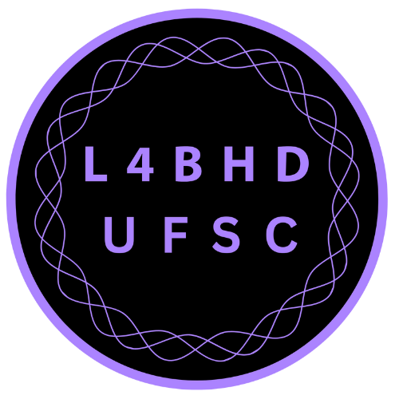
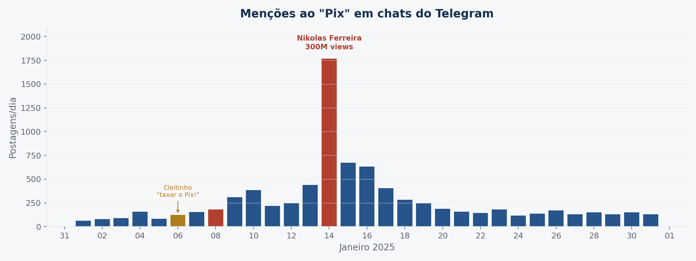

ECOSSISTEMA DE
DESINFORMAÇÃO E
RADICALIZAÇÃO


Articulação de métodos computacionais e análise qualitativa, com dados coletados em tempo real durante a crise do Pix (jan/2025).
tempo real
qualitativa
interdisciplinar
Métodos computacionais
- Monitoramento de 333 chats do Telegram (9.360 mensagens)
- Google Trends — buscas por "taxa do Pix" em tempo real
- Coleta de posts no X e Instagram (viralização)
- Análise de redes e métricas de engajamento
Análise qualitativa
- Análise discursiva de vídeos e postagens virais
- Identificação de frames e teorias conspiratórias
- Leitura fine-grained do ciclo policymaking × desinformação
- Triangulação entre plataformas e fontes
puxada por pessoas de baixa renda
Nikolas Ferreira · Instagram

Plataformas competem com o sistema de peritos (ciência, imprensa, Estado) pela produção legítima da verdade.
Dinâmica cismogênica
Polarização por feedback positivo entre polos antagonísticos. Cada lado radicaliza o outro em espiral ascendente — a desconfiança é estrutural, não contingencial.
Incide sobre todo o ciclo
A desinformação reverte o ciclo de políticas públicas antes do debate e da implementação. A política é forçada a reagir, não a conduzir.
1. Ambientes de crise permanente
"O real é o que acontece em tempo real." Peritos tornam-se ilegítimos — lentos, mediados, suspeitos.
2. Topologia triádica
Seguidores, algoritmos e influenciadores em retroalimentação. Novos mediadores legitimam-se na denúncia dos antigos.
3. Eu-pistemologia
"Circuitos curtos" do senso comum aplicados a fenômenos complexos. "Fazer a própria pesquisa" como imperativo.
4. Preempção e fatos afetivos
A notícia falsa "poderia ter sido, ou ainda virá a ser". O fato afetivo não se contradiz com a correção factual.
Checagem de fatos é insuficiente: desinformação é forma estruturante da política contemporânea.
Seguidores
- Educação midiática
- Mediadores com confiança local
- Interceptação no offline
Algoritmos
- Regulação de plataformas
- Monitoramento em tempo quase real
- Auditoria de sistemas
Comunicação
- Comunicação digital pública
- Escuta e disputa de sentidos
- Pedagogia sem tom professoral
OBRIGADO!
ao Ipea e aos organizadores do volume ·
e aos pareceristas anônimos que contribuíram com o capítulo.